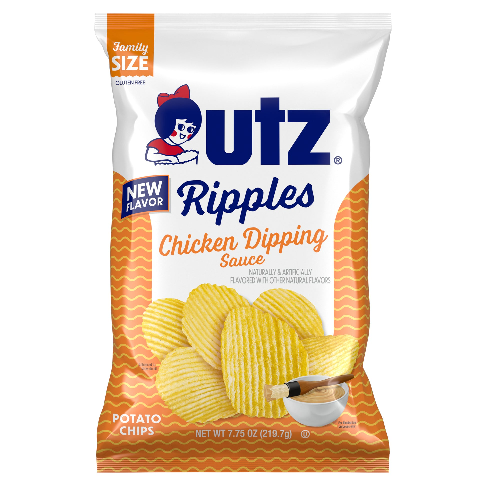
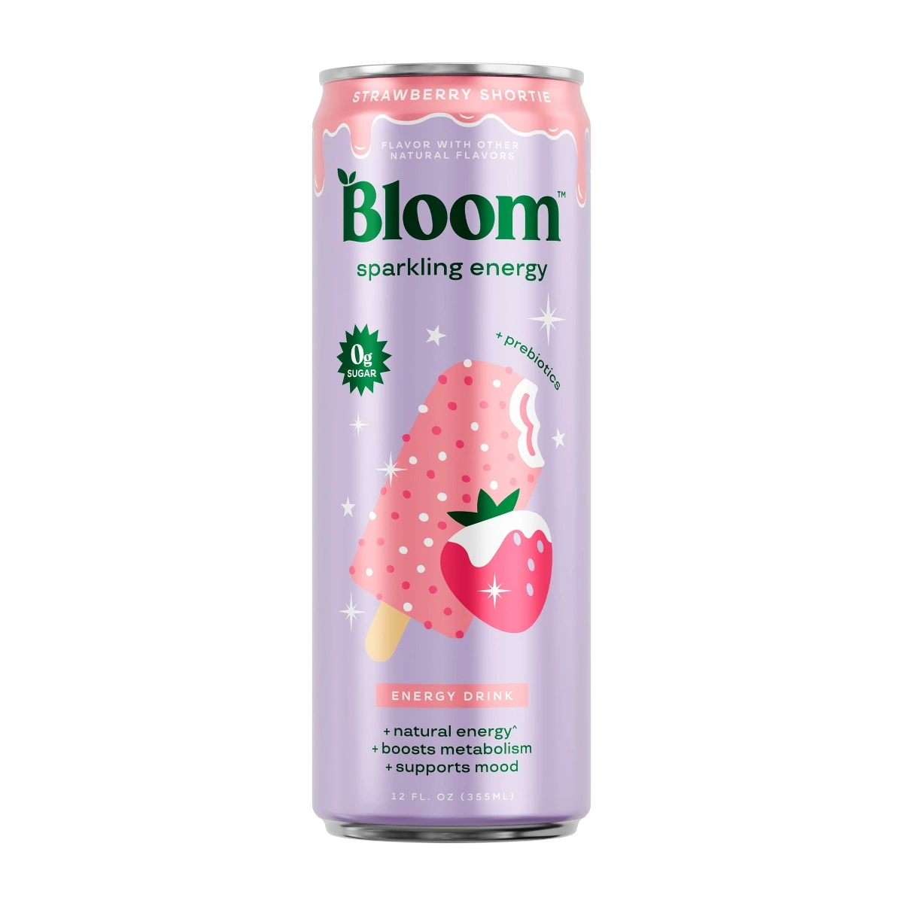
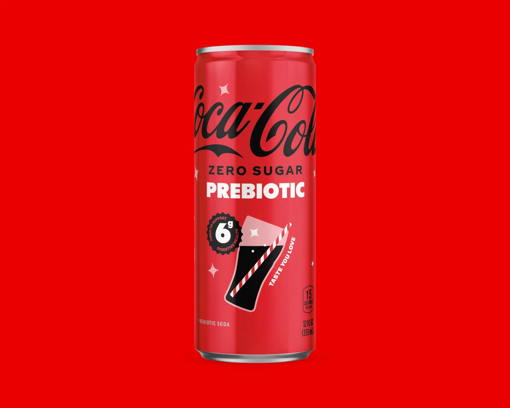
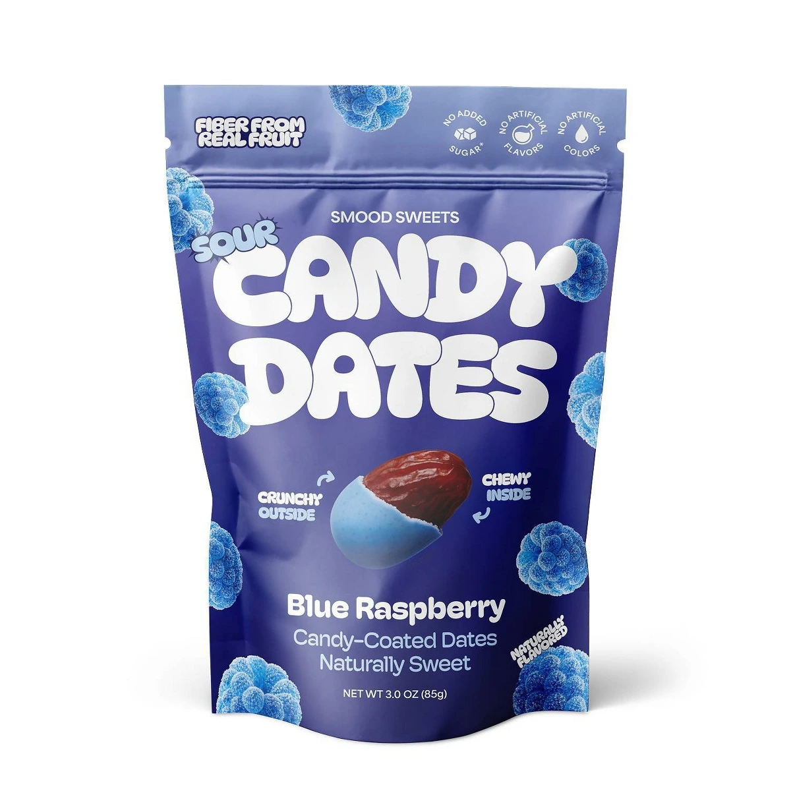
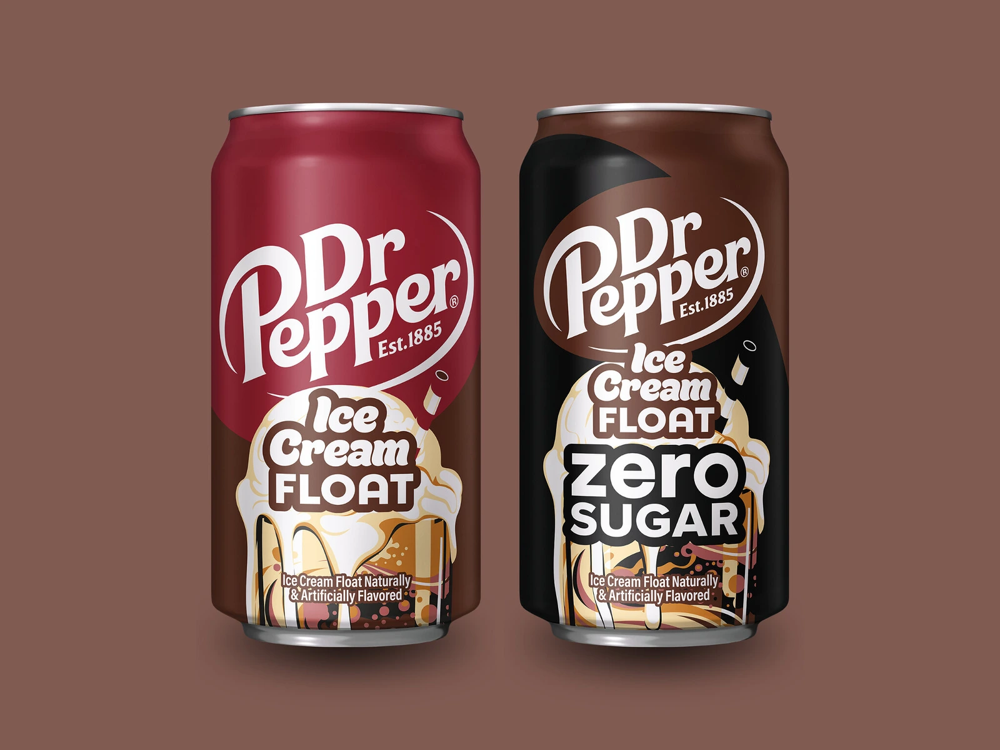

SKIPPY meets Chocottone. Here is what is actually new.
A new SKIPPY partnership, a separate Pistachio launch and the detail to check before ordering a peanut-butter loaf.
4 min read
What is new. What is gone. What is coming back.
Search is temporarily unavailable. You can still browse every article using the page links below.
25-30 of 71 articles
A new SKIPPY partnership, a separate Pistachio launch and the detail to check before ordering a peanut-butter loaf.

Utz says these sauce-inspired chips are permanent. The retailer list, bag sizes and online case details matter before you buy.

Where to find Strawberry Shortie, its caffeine content and why Cotton Candy and Lemon Freezie are a different launch.

Coke, Sprite and Fresca get a prebiotic test. The three-state rollout and what the labels actually say.

The new candy-date flavors, Target availability and the label detail worth reading before you buy.

Release timing, the Zero Sugar option, and the difference between Ice Cream Float and Vanilla Float.